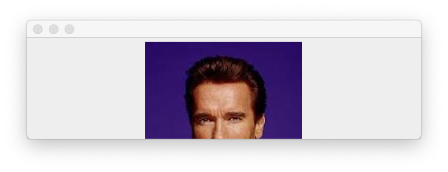

Body Part Quiz

Goal:
We are going to use GUI components to make a quiz in which only part of an image is displayed (like the one shown above). The player has to guess the name of each celebrity shown.
Steps:
- The program already contains a JFrame and JPanel. There is also a selection of celebrity photos which you can use for the quiz (or replace them with your own selection).
- Your challenge is to resize the frame so that only part of the celebrity's face is shown.
- Ask the user to guess who each person is and keep a score of how many they get correct.
- End the program when there are no more images to display.